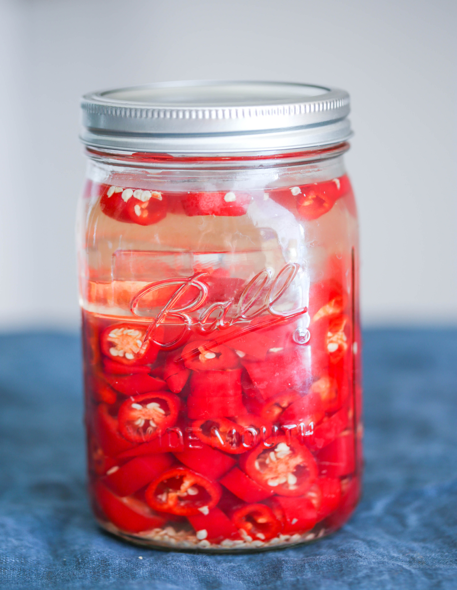

Сирача – это острый соус, который широко используется в тайской и вьетнамской кухне. Вариантов этого соуса огромное множество, мой фирменный рецепт состоит из 2 отдельных ферментированных продуктов, которые я держу отдельно целый месяц, потом соединяю и получаю готовый к употреблению соус. Рекомендую сначала прочитать весь рецепт до конца, а потом уже приступать к приготовлению. Обе заготовки для сирачи нужно сделать в один день.
Оставшийся чеснок и мед можно закрыть и оставить при комнатной температуре. При желании можно добавить новую порцию чеснока и меда и продолжать ферментировать. Этот продукт помогает при простуде, гриппе и других респираторных и сезонных заболеваниях. Оставшийся рассол из-под перцев рекомендую подписать, указав название и дату, и поставить в холодильник. Его можно использовать как пробиотик для ферментации или как маринад для мяса и рыбы.